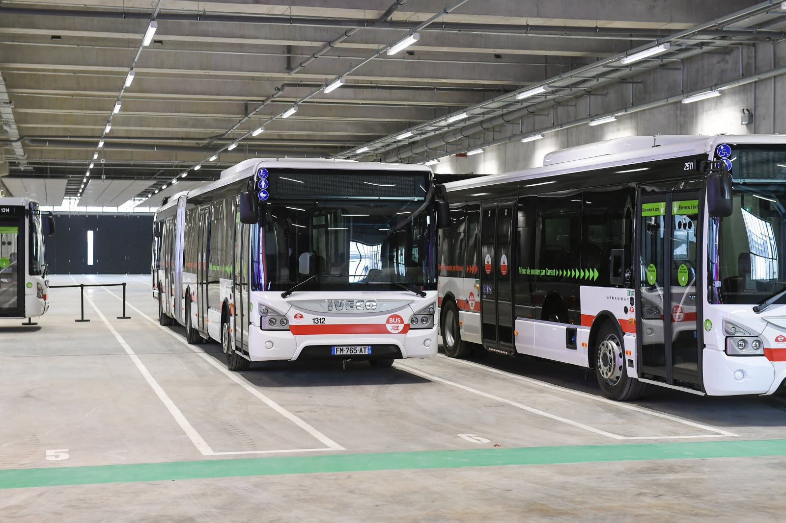
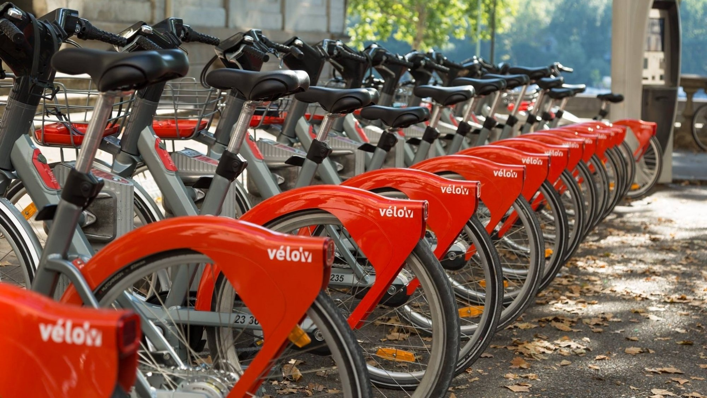
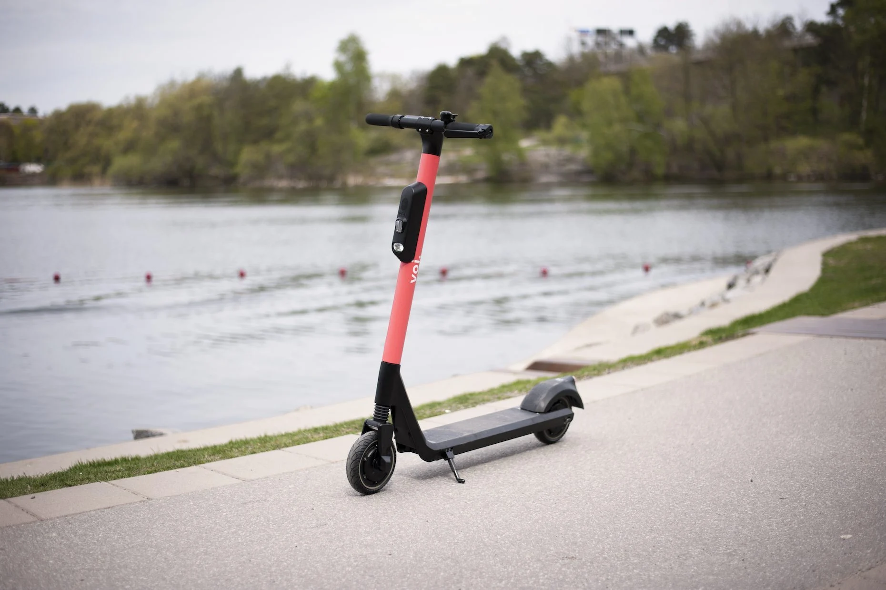

Le tramway est sans doute a l'heure actuelle le moyend de transport le plus utilisé par les etudiants, écolo, avec une emission de co2 de 3,4 g / km
et rapide avec une assez bonne frequence, il est de loin le moyen de transports prefere des etudiants.
Le tramway t4 et t1 sont ceux passant sur notre campus
L'inconvenient de ce transport est : la foule,
Le campus possede 6 arrets de tram qui sont: Condorcet pour le T1 et T4, Universitée lyon 1 pour le T1 et le T4, la doua gaston berger pour le T1 et le T4,
Insa pour le T1 et le T4, corix luizet pour le T1 et iut feyssine pour le T1
Le bus est sans doute a l'heure actuelle au contraire du tramway un des moyens de transport doux le plus polluant utilisee par les etudiants avec
un rejet de 104 g / km, il est egalement tres imprevisibles ( bouchons, retard) et passe moins souvent que le tramway
Les inconvenients sont : la foule, la circulation
Le campus possede 5 arrets de bus qui sont: Condorcet pour le C17, le C26 et le 37;
Insa pour le C17 et le C26
Pour ceux qui aime etre tout seul, le velo peut etre benefique, en plus d'etre bon pour la sante il est tres rapide non polluant et permet de mieux gerer ses horaires. De plus plusieurs bornes velov sont disponibles sur le campus et un grand nombre de garage a velo egalement Les inconvenients sont : L'effort physique, le risque en cas de fatigue
La trotinette electrique est sans doute le moyen de transport le moins utilise mais le plus plaisant, elle est pratique utile et peux meme se combiner avec le bus et le tram ce qui permet de reduire encore plus le temps de trajet. De plus de nombreux garages sont presents sur le campus pour ranger vos trotinettes Les inconvenients sont : le prix, la vitesse


